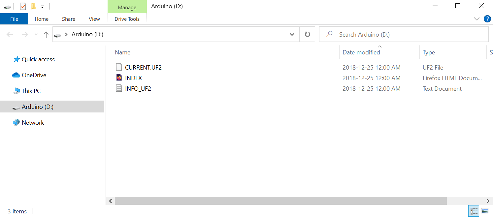
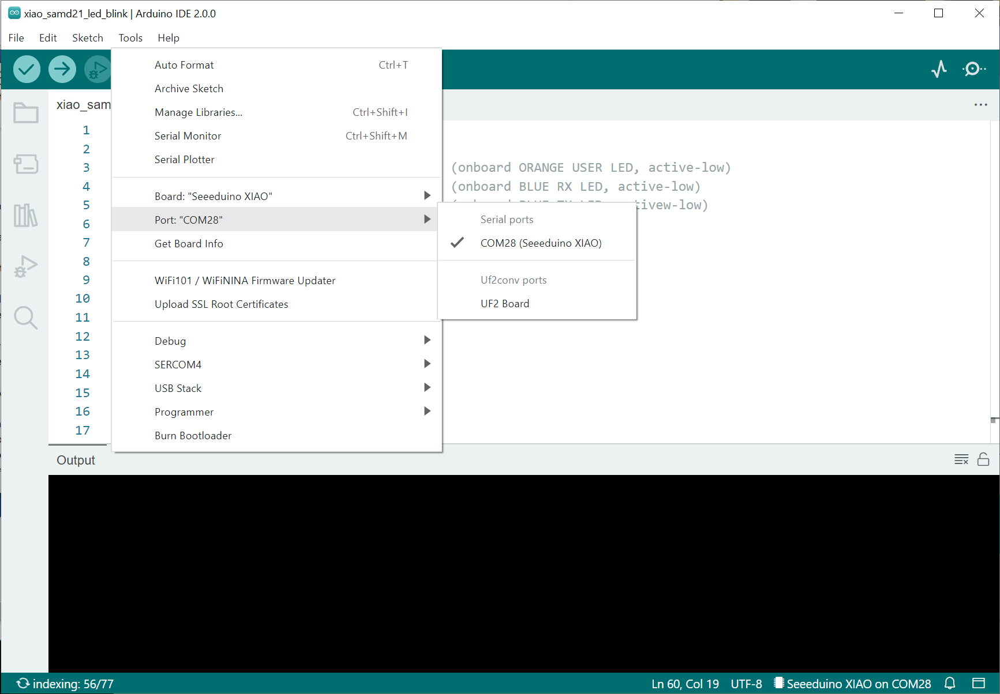

การเขียนโปรแกรม Arduino สำหรับบอร์ดไมโครคอนโทรลเลอร์ Seeeduino XIAO (SAMD21)#
▷ Seeed Studio XIAO#
บทความนี้กล่าวถึง การใช้งานและการเขียนโปรแกรม Arduino สำหรับบอร์ดไมโครคอนโทรลเลอร์ในตระกูล XIAO ที่ใช้ชิป SAMD21
บอร์ดในตระกูล XIAO ของบริษัท Seeed Studio จากประเทศจีน มีขนาดเล็ก และมีการเลือกใช้ชิปไมโครคอนโทรลเลอร์ 32 บิต หลายแบบ เช่น
- SAMD21 (Arm Cortex-M0+)
- RP2040 (Arm Cortex-M0+, Dual-Core)
- nRF52840 (Arm Cortex-M4F)
- ESP32-C3 (RISC-V)
- ESP32-S3 (Xtensa LX7)
บอร์ดในตระกูล XIAO มีลักษณะเหมือนกันคือ
- บอร์ดมีขนาดเล็ก (Small Form Factor) มีขนาดโดยประมาณ 22 x 18 mm.
- สามารถนำไปบัดกรีขา Pin Header และเสียบขาลงบนเบรดบอร์ดได้ง่าย
- มีคอนเนกเตอร์สำหรับ USB แบบ Type-C
- ไม่มีชิป USB-to-Serial Bridge เนื่องจากชิปไมโครคอนโทรลเลอร์ตามที่ได้กล่าวไป รองรับการใช้งาน Native USB 2.0
- บอร์ดบางรุ่น มีวงจรชาร์จแบตเตอรีลิเธียม (Single-cell Lithium Battery Charger) บางรุ่นก็มี RGB LED อยู่บนบอร์ดด้วย
รูป: แผนผังแสดงตำแหน่งของขาต่าง ๆ บนบอร์ด XIAO SAMD21 (Source: SeeedStudio)
บอร์ดรุ่นแรกในตระกูล XIAO คือ Seeeduino XIAO SAMD21 มีคุณสมบัติดังนี้
- ทางบริษัทได้เปิดตัวบอร์ดในช่วงปลายปี ค.ศ. 2019
- แต่มีข้อสังเกตว่า ชิป SAMD21 มีการใช้งานมาตั้งแต่ปี 2012 และหลายปีที่ผ่านมา ก็มีบอร์ดไมโครคอนโทรลเลอร์ที่ใช้ชิปดังกล่าวออกมาสู่ตลาด เช่น บอร์ด Arduino MKR Family, Adafruit Feather M0, Adafruit Circuit Playground เป็นต้น และชิปรุ่นนี้ได้รับความนิยมน้อยลงในปัจจุบันเมื่อเปรียบเทียบกับชิปไมโครคอนโทรลเลอร์รุ่นใหม่ ๆ
- มีราคาประมาณ $US 5 (ประมาณ THB 250.00 จากการสำรวจสินค้าบนเว็บไซต์ในประเทศไทย)
- ใช้ชิปไมโครคอนโทรลเลอร์ Atmel/Microchip AT-SAMD21G18-MU
- ภายในมีตัวประมวลผล 32-bit ARM Cortex M0+ (48MHz)
- มีหน่วยความจำภายใน 256KB Flash และ 32KB SRAM
- เน้นการทำงานแบบใช้พลังงานต่ำ (Low-Power Application)
- มีขา GPIO ใช้เป็นขาดิจิทัลได้ ทำงานที่ระดับแรงดันสำหรับลอจิกไม่เกิน VCC=3.3V
- Digital I/O: D0 ~ D10 pins
- ภายในชิปมีวงจร 12-bit, 350ksps ADC (Analog-to-Digital Converter)
และ 10-bit, 350 ksps DAC (Digital-to-Analog Converter)
- ADC Input: A0 ~ A10 pins รับอินพุตในช่วง 0V ~ 3.3V และให้ค่าตัวเลขในช่วง 0 ~ 4095
- DAC Output จำนวน 1 ขา (A0/D0 pin) ใช้ค่าตัวเลขในช่วง 0 ~ 1023 และมีแรงดันไฟฟ้าเอาต์พุตในช่วง 0V ~ 3.3V
- มีวงจรแปลงและควบคุมระดับแรงดันไฟฟ้าจากขา 5V (VIN) ให้เป็น 3.3V
- ใช้ไอซี XC6206P33MR LDO Voltage Regulator
- มีขาเชื่อมต่อกับวงจรภายนอกสำหรับ I2C, SPI และ SPI อย่างละหนึ่งชุด ได้แก่
- I2C: D5=SCL, D4=SDA pins
- UART: D6=TX, D7=RX pins
- SPI: D7=SS, D8=SCK, D9=MISO, D10=MOSI pins
- มี LED บนบอร์ดดังนี้
- Power LED (Green)
- User LED (Orange): D13 pin
- Tx & Rx LEDs (Blue): D11 & D12 pins ถ้ามีการรับหรือส่งข้อมูลผ่าน Serial จะเห็นสังเกตเห็นการกระพริบของ LED สีน้ำเงิน
- มีขาอยู่ด้านล่างของบอร์ดเป็นแบบ Soldering Pads สำหรับ SWD Interface
- มี 4 จุด ได้แก่ SWCLK, SWDIO, RESET, GND ตามลำดับ
- มีการติดตั้งเฟิร์มแวร์ Arduino-Compatible USB-Serial /
UF2 Bootloader มาให้แล้ว
- ใช้วิธีลากไฟล์เฟิร์มแวร์ .uf2 ไปยังไดร์ฟ (ชื่อ
Arduino) เพื่ออัปโหลดเฟิร์มแวร์ - ถ้าเป็นไฟล์ .hex / .bin จะต้องมีการแปลงให้เป็นไฟล์ .uf2 ก่อนนำไปใช้
- ใช้วิธีลากไฟล์เฟิร์มแวร์ .uf2 ไปยังไดร์ฟ (ชื่อ
- ข้อจำกัดในการใช้งานบอร์ด XIAO มีดังนี้
- เหมาะสำหรับผู้ใช้ต้องการใช้บอร์ดขนาดเล็ก และมีจำนวนขา I/O ไม่มาก
- ไม่มีวงจร WiFi / BLE สำหรับการสื่อสารข้อมูลแบบไร้สาย
- ไม่มีปุ่มกด RESET อยู่บนบอร์ด หากต้องการรีเซต หรือ เข้าสู่โหมด Bootloader จะต้องใช้ปลายสายไฟสองด้านสัมผัสที่ Soldering Pads บนบอร์ด สำหรับขา RESET และ GND การสัมผัสสองครั้งในระยะเวลาสั้น ๆ เป็นเหมือนการกดปุ่มรีเซตแบบ Double Click ซึ่งจะทำให้ชิปไมโครคอนโทรลเลอร์เข้าสู่ Bootloader Mode
- เมื่ออยู่ในโหมด Bootloader จะมองเห็นพอร์ต Serial ได้เช่นกัน และถ้ามีการใช้
SerialUSBในการเขียนโค้ด Arduino เพื่อเปิดใช้งาน USB CDC ก็จะมองเห็นพอร์ต Serial ได้ แต่มีหมายเลขพอร์ตต่างกันได้
รูป: ตำแหน่งของ Soldering Pads ที่อยู่ด้านล่าง (Bottom Side) ของบอร์ด XIAO เวอร์ชันเก่า และ เวอร์ชันใหม่ (Source: SeeedStudio)
รูป: การรีเซตบอร์ด หรือการทำให้เข้าสู่โหมด Bootloader โดยการเชื่อมต่อระหว่างขา Reset Pad และ GND Pad (Source: SeeedStudio)

รูป: การมองเห็นไดร์ฟในระบบปฏิบัติการ Windows 10 เมื่อเชื่อมต่อกับบอร์ด XIAO ที่อยู่ในโหมด UF2 Bootloader
ตัวเลือกสำหรับการเขียนโปรแกรมได้แก่
- การใช้ซอฟต์แวร์ Microchip Studio IDE สำหรับภาษา C/C++
- การเขียนโปรแกรม Arduino Sketch ด้วย Arduino IDE
- ภาษาอื่นเป็นตัวเลือก เช่น
▷ การเขียนโปรแกรมด้วย Arduino IDE#
ถัดไปเป็นขั้นตอนการติดตั้ง Arduino Core for SAMD21 / D51 สำหรับบอร์ด SeeedStudio XIAO เพื่อนำมาใช้กับซอฟต์แวร์ Arduino IDE v2.0.0
เปิดใช้งาน Arduino IDE v2.0 แล้วไปที่เมนู File > Preferences เพิ่มรายการ URL ลงในช่องข้อความ "Additional Boards Manager URLs" ดังต่อไปนี้ แล้วกดปุ่ม OK
https://files.seeedstudio.com/arduino/package_seeeduino_boards_index.json
จากนั้นคลิกเลือกไอคอนทางซ้ายมือสำหรับ BOARD MANAGER แล้วค้นหาด้วยคำว่า "Seeed SAMD" แล้วคลิกเลือกติดตั้งเวอร์ชันล่าสุด (ทดลองใช้ v1.8.3) โดยกดปุ่ม INSTALL
รูป: การติดตั้ง Arduino Core สำหรับ SeeedStudio XIAO SAMD21
ถัดไปให้เชื่อมต่อระหว่างคอมพิวเตอร์ผู้ใช้กับบอร์ด XIAO ด้วยสาย USB หากเป็นการใช้งานครั้งแรก แนะนำให้เริ่มต้นด้วยการทำงานบอร์ด XIAO เข้าสู่โหมด Bootloader ตามวิธีการที่ได้กล่าวถึงไปแล้ว จากนั้นจะมองเห็นหมายเลขพอร์ตอนุกรม และเลือกบอร์ด Seeeduino XIAO

รูป: การเลือกหมายเลขพอร์ตที่เชื่อมต่อกับ XIAO SAMD21 ใน Arduino IDE v2.0
ในส่วนถัดไปของบทความนี้ มีตัวอย่างโค้ด Arduino Sketches สาธิตและทดลองใช้งานบอร์ด XIAO มีดังนี้
- Digital Output / PWM Output: สร้างสัญญาณเอาต์พุตแบบดิจิทัล และ PWM สำหรับวงจร LEDs
- Push Button & Digital Input Sampling: อ่านอินพุตดิจิทัล และตรวจสอบสถานะการกดปุ่ม
- Analog Input Reading (ADC): อ่านอินพุตแอนะล็อกโดยใช้วงจร ADC ภายในชิป SAMD21
- Analog Output (DAC) and Analog Input (ADC): สร้างสัญญาณแอนะล็อกเอาต์พุตโดยใช้วงจร DAC ภายในชิป และอ่านสัญญาณดังกล่าวเป็นอินพุตด้วย ADC
- I2C Master & BH1750 Light Sensor Reading: อ่านข้อมูลจากโมดูลเซนเซอร์วัดความเข้มแสง BH1750 และเชื่อมต่อด้วยบัส I2C
- External Interrupt & Rotary Encoder Switch: อ่านค่าอินพุตดิจิทัลและตรวจสอบการหมุนปุ่มของโมดูล Rotary Encoder เพื่อเพิ่มหรือลดค่าตัวนับ และสาธิตการใช้งานอินเทอร์รัพท์ภายนอก
- HC-SR04P Ultrasonic Distance Sensor: อ่านค่าระยะห่างจากวัตถุกีดขวางโดยใช้โมดูลเซนเซอร์อัลตราโซนิก HC-SR04P
▷ โค้ดตัวอย่าง: Digital Output / PWM Output#
โค้ดตัวอย่างแรกเป็นการทดสอบการทำงานของบอร์ด Seeeduino XIAO
โดยทำให้ LED 2 ดวง (ขา D11 และ D12) ที่อยู่บนบอร์ด
เกิดการกระพริบหลายครั้งในช่วงเวลาหนึ่ง โดยใช้คำสั่ง digitalWrite()
กำหนดสถานะเอาต์พุต และมีการสร้างสัญญาณ PWM โดยใช้คำสั่ง analogWrite(...)
ของ Arduino API
เพื่อใช้ในการปรับความสว่างของ LED (ขา D12) และมีการเปลี่ยนค่าไปทุก ๆ 4 มิลลิวินาที
ในโค้ดตัวอย่างมีการใช้คำสั่ง analogWriteResolution(...)
เพื่อกำหนดจำนวนบิตที่ต้องการใช้และอยู่ในช่วง 8 .. 12 บิต
จำนวนบิตนี้จะเป็นตัวกำหนดช่วงของค่าตัวเลขที่จะนำไปใช้กับคำสั่ง analogWrite(...) ถ้าเป็น 12 บิต
ก็ใช้ตัวเลขในช่วง 0 .. 4095 สำหรับการตั้งค่า PWM Duty Cycle แต่ถ้าเป็น 8 บิต
ก็จะมีค่าอยู่ในช่วง 0 .. 255 เป็นต้น
ในตัวอย่างนี้ได้กำหนดให้ค่า PWM Duty Cycle เพิ่มขึ้นไปจนถึงค่าสูงสุด 4095 แล้วลดลงไปจนถึง 0 ดังนั้นจะเห็นว่า LED มีความสว่างเพิ่มขึ้นจนสูงสุดแล้วจึงลดลง แล้วเกิดขึ้นซ้ำไปเรื่อย ๆ
Arduino Sketch: Dual-LED Blink & PWM-based LED Fading
// Target board: Seeeduino XIAO SAMD21
#define PWM_LED_PIN (13) // D13 pin (onboard Orange USER LED, active-low)
#define TX_LED_PIN (12) // D12 pin (onboard Blue TX LED, activew-low)
#define RX_LED_PIN (11) // D11 pin (onboard Blue RX LED, active-low)
#define LED_ON (0)
#define LED_OFF (1)
#define TIMEOUT_MS (4000)
#define PWM_RESOLUTION (12)
const int COUNTER_MAX = (1<<PWM_RESOLUTION);
int counter = COUNTER_MAX-1;
uint32_t ts; // timestamp
void toggle_leds( int n=10 ) {
int state = 1;
for ( int i=0; i < n; i++ ) {
state = !state;
digitalWrite( TX_LED_PIN, !state );
digitalWrite( RX_LED_PIN, state );
delay( 100 );
}
digitalWrite( TX_LED_PIN, LED_OFF );
digitalWrite( RX_LED_PIN, LED_OFF );
}
String getSketchName( const char *fullpath ) {
String str = fullpath;
int pos = str.lastIndexOf("\\");
if (pos >= 0) {
return str.substring(pos+1, str.length());
}
return str;
}
// Note: Serial is the same as SerialUSB.
void setup() {
// Start the SerialUSB interface
// Note: Serial is the same as SerialUSB.
Serial.begin( 1000000); // can be any value (ignored)
// Wait for Arduino Serial Monitor to open.
while ( !Serial );
Serial.println( F("SAMD21 - Seeeduino XIAO board.") );
Serial.print( F("Arduino Sketch: ") );
Serial.println( getSketchName( __FILE__ ) );
Serial.println( F("Build time: " __DATE__ " " __TIME__ ) );
Serial.flush();
// Show the CPU clock frequency (in MHz)
Serial.printf( "CPU clock: %lu MHz\r\n",
(uint32_t)(SystemCoreClock/1e6) );
Serial.flush();
// Set pin directions for LED outputs
pinMode( TX_LED_PIN, OUTPUT );
pinMode( RX_LED_PIN, OUTPUT );
pinMode( PWM_LED_PIN, OUTPUT );
// Toggle onboard TX/RX LEDs.
toggle_leds( 20 );
// Set PWM resolution bits
analogWriteResolution( PWM_RESOLUTION );
analogWrite( PWM_LED_PIN, counter );
ts = millis();
}
#define PWM_UPDATE_INTERVAL_MS (4)
void loop() {
uint32_t t_now = millis();
if ( (t_now - ts) >= PWM_UPDATE_INTERVAL_MS ) {
ts = t_now; // Update the last PWM update timestamp
counter += 8; // Increment counter
if ( counter >= (2*COUNTER_MAX) ) {
counter = 0;
}
int brightness = (counter >= COUNTER_MAX) ?
(2*COUNTER_MAX - 1 - counter) : counter;
// Update the PWM duty cycle
analogWrite( PWM_LED_PIN, brightness );
}
yield();
}
▷ โค้ดตัวอย่าง: Push Button & Digital Input Sampling#
ตัวอย่างโค้ดถัดไปสาธิตการตรวจสอบการเปลี่ยนแปลงสถานะของอินพุต-ดิจิทัลที่ได้จากการต่อวงจรปุ่มกดภายนอก (Push Button) และทำงานแบบ Active-Low (เปิดใช้งานตัวต้านทานภายในแบบ Internal PullUp) โดยเลือกใช้ขา D2 ของบอร์ด XIAO
การอ่านค่าบิตจากขาอินพุต จะใช้คำสั่ง digitalRead(...) ทุก ๆ 5 มิลลิวินาที แล้วนำไปเก็บไว้ในตัวแปร
btn_bits ขนาด 8 บิต โดยการเลื่อนบิตข้อมูลเดิมไปทางซ้ายหนึ่งตำแหน่ง และเขียนค่าบิตใหม่ลงในตำแหน่งบิต LSB
จากนั้นจะมีการตรวจสอบค่าของตัวแปร ดูว่ามีการเปลี่ยนแปลงจากค่าเริ่มต้นคือ 0xFF ไปเป็น 0xF0 แล้วหรือไม่
ถ้ามีค่าดังกล่าว ก็หมายความว่า จากการอ่านพุตหลายครั้งตามลำดับ ได้ค่าลอจิกเป็น 0 (Low) ซึ่งเกิดจากการกดปุ่ม
#define BTN_PIN (2) // use D2 pin
#define LED_PIN (12) // use D12 pin (onboard)
void setup() {
Serial.begin(1000000);
while (!Serial);
pinMode( LED_PIN, OUTPUT );
pinMode( BTN_PIN, INPUT_PULLUP );
}
#define SAMPLING_MSEC (5)
void loop() {
static uint32_t ts_saved = 0, ts_now;
static uint32_t ts_last_event = 0;
static uint32_t btn_count = 0;
static uint8_t btn_bits = 0xff;
ts_now = millis();
if ( (ts_now - ts_saved) >= SAMPLING_MSEC ) { // periodic input sampling
// Save the timestamp for the next periodic sampling.
ts_saved = ts_now;
// Update input bit patterns.
btn_bits = (btn_bits<<1) | digitalRead(BTN_PIN);
if ( btn_bits == 0xF0) { // A falling edge was detected.
// Toggle the LED status.
digitalWrite( LED_PIN, !digitalRead( LED_PIN) );
Serial.printf( "Button press: #%lu (%lu msec)\r\n",
++btn_count, (ts_now-ts_last_event) );
// Update the timestamp of the last LED toggle action.
ts_last_event = ts_now;
}
}
}
รูป: ข้อความเอาต์พุตใน Arduino Serial Monitor จากการทดลอง เมื่อมีการกดปุ่มหลายครั้ง
▷ โค้ดตัวอย่าง: Analog Input Reading (ADC)#
ตัวอย่างถัดไปเป็นการเขียนโค้ด เพื่ออ่านค่าสัญญาณแอนะล็อกด้วยคำสั่ง analogRead(...)
ของ Arduino API
จำนวน 3 ช่อง ตามลำดับ โดยเลือกใช้ขา A1, A2, A3
และเลือกใช้ขนาดข้อมูล 12 บิต (0..4095) สำหรับการแปลงค่าโดยวงจร ADC ภายในชิป SAMD21
Arduino Sketch: 3-Channel Analog Input Readings
const int SENSOR_PINS[] = {A1,A2, A3}; // Analog input pins
const size_t NUM_PINS = sizeof(SENSOR_PINS)/sizeof(int);
void setup() {
Serial.begin(1000000);
while (!Serial);
delay(100);
analogReadResolution(12);
}
void loop() {
static uint16_t values[ NUM_PINS ];
// Read analog input channels
for ( int i=0; i < NUM_PINS; i++ ) {
values[i] = analogRead( SENSOR_PINS[i] );
}
// Send analog input values to SerialUSB
for ( int i=0; i < NUM_PINS; i++ ) {
Serial.printf( "AIN%d: %u%s", i, values[i],
(i < (NUM_PINS-1) ? "," : "\r\n") );
}
Serial.flush();
delay(100);
}
ในการป้อนสัญญาณแอนะล็อกเป็นอินพุต อาจใช้วิธีต่อวงจรแบ่งแรงดัน (Voltage Divider) โดยใช้ตัวต้านทาน 4 ตัว นำมาต่ออนุกรมกัน แล้วเลือกวัดแรงดันไฟฟ้าที่อยู่ระหว่าง 0V กับ 3.3V ซึ่งมี 3 ตำแหน่งที่แตกต่างกัน และควรจะได้ค่าตัวเลขคงที่ แต่ในทางปฏิบัติจะมีความคลาดเคลื่อนเกิดขึ้นในการวัดค่าด้วย ADC
รูป: วงจรแบ่งแรงดันที่ใช้ตัวต้านทาน 100Ω จำนวน 3 ตัว และ 4.7kΩ อีก 1 ตัว นำมาต่ออนุกรมกัน
รูป: การแสดงกราฟจากข้อมูลที่อ่านจากขาแอนะล็อก 3 ช่องอินพุต (จากวงจรแบ่งแรงดัน) โดยใช้ Arduino Serial Plotter
หากมีโมดูลเซนเซอร์ที่ให้เอาต์พุตแบบแอนะล็อก และมีระดับแรงดันไฟฟ้าอยู่ในช่วง 0V..3.3V ก็สามารถนำมาใช้ได้เช่นกัน เช่น TEMT6000 Analog Light Sensor ซึ่งให้แรงดันเอาต์พุตขึ้นอยู่กับสภาพแสงแวดล้อม
รูป: โมดูลเซนเซอร์แสง TEMT6000 สำหรับทดลองอ่านค่าแอนะล็อก 3 ช่องสัญญาณ
รูป: การแสดงกราฟจากข้อมูลที่อ่านจากขาแอนะล็อก 3 ช่องอินพุต (จากโมดูลเซนเซอร์แสง TEMT6000)
▷ โค้ดตัวอย่าง: Analog Output (DAC) and Analog Input (ADC)#
ตัวอย่างถัดไปเป็นตัวอย่างการเขียนโค้ดเพื่อสร้างสัญญาณแอนะล็อก โดยใช้วงจร DAC ที่อยู่ภายในชิป SAMD21 ดังนั้นจึงต้องเลือกใช้ขา A0 และไม่ใช่การสร้างสัญญาณ PWM เหมือนขาอื่น A1 ~ A10
เมื่อนำสัญญาณนี้มาใช้เป็นอินพุตสำหรับวงจร ADC โดยการเชื่อมต่อด้วยลวดสายไฟ (Jumper Wire) หนึ่งเส้น
และทำได้ง่าย โดยใช้คำสั่ง analogWrite(...) และ analogRead(...)
ของ Arduino API ตามลำดับ
ในตัวอย่างนี้ได้กำหนดจำนวนบิตที่จะใช้กับ DAC และ ADC โดยใช้คำสั่ง
analogWriteResolution(...) และ analogReadResolution(...) ตามลำดับ
เมื่อกำหนดค่าเอาต์พุตให้ DAC แล้ว ก็เว้นระยะเวลาก่อนอ่านค่าอินพุตแล้วแปลงให้เป็นค่าตัวเลขสำหรับแรงดันไฟฟ้า ในหน่วยเป็นมิลลิโวลต์ เมื่อใช้แรงดันอ้างอิง 3.3V หรือ 3300mV
Arduino Sketch: DAC - ADC Loopback
#define ANALOG_OUT_PIN (A0) // use DAC output (PA02 pin)
#define ANALOG_IN_PIN (A1)
#define ADC_RESOLUTION (12)
#define DAC_RESOLUTION (10)
#define ADC_MAX (1UL << ADC_RESOLUTION)
#define DAC_MAX (1UL << DAC_RESOLUTION)
#define VREF_MV (3300UL)
void setup() {
// Start the SerialUSB interface
Serial.begin(1000000);
// Wait for Arduino Serial Monitor to open.
while ( !Serial );
Serial.println( F("SAMD21 - Seeeduino XIAO board.") );
Serial.flush();
// Set ADC and DAC resolution
analogWriteResolution( DAC_RESOLUTION );
analogReadResolution( ADC_RESOLUTION );
delay(10);
}
void loop() {
static uint32_t dac_value = 0;
static uint32_t adc_value = 0;
// Write DAC output.
analogWrite( ANALOG_OUT_PIN, dac_value );
// Read ADC input.
adc_value = analogRead( ANALOG_IN_PIN );
// Display ADC and DAC values (converted to millivolts)
Serial.printf( "DAC:%u,ADC:%u\r\n",
(dac_value*VREF_MV)/DAC_MAX, (adc_value*VREF_MV)/ADC_MAX );
Serial.flush();
dac_value = (dac_value+1) % DAC_MAX;
if (dac_value%100 == 0) {
delay(2000);
}
}
ข้อมูลที่ถูกส่งออกมาทาง Serial ในแต่ละบรรทัดจะมีสองค่าคือ DAC และ ADC โดยแปลงให้เป็นค่าแรงดันไฟฟ้าเมื่อใช้แรงดันอ้างอิง VREF เท่ากับ 3300mV
รูป: ตัวอย่างการแสดงกราฟจากข้อมูลที่ได้รับใน Arduino Serial Plotter
จากรูปกราฟ แกนตั้งมีหน่วยเป็น mV มีค่าไม่เกิน 3300 และแกนนอนเป็นตัวเลขลำดับข้อมูลที่ถูกส่งออกมาแต่ละบรรทัด ค่าตัวเลขสำหรับ DAC เป็นระดับแรงดันเอาต์พุตที่วงจร DAC จะต้องสร้างเอาต์พุตออกมา และค่าตัวเลข ADC เป็นระดับแรงดันอินพุตที่วัดได้ด้วยวงจร ADC
หากจะลองสร้างชุดข้อมูลตามรูปคลื่นไซน์ (Sine Wave) เช่น มีจำนวนข้อมูล (N_SAMPLES)
เท่ากับ 50 ก็มีตัวอย่างดังนี้
Arduino Sketch: DAC - ADC Loopback (Sine Wave)
#define ANALOG_OUT_PIN (A0) // DAC output pin
#define ANALOG_IN_PIN (A1) // ADC input pin
#define ADC_RESOLUTION (12)
#define DAC_RESOLUTION (10)
#define ADC_MAX (1UL << ADC_RESOLUTION)
#define DAC_MAX (1UL << DAC_RESOLUTION)
#define VREF_MV (3300UL)
#define N_SAMPLES (50)
uint16_t SINE_TABLE[N_SAMPLES] = {0};
void setup() {
// Start the SerialUSB interface
Serial.begin(1000000);
// Wait for Arduino Serial Monitor to open.
while ( !Serial );
Serial.println( F("SAMD21 - Seeeduino XIAO board.") );
Serial.flush();
// Set ADC and DAC resolution
analogWriteResolution( DAC_RESOLUTION );
analogReadResolution( ADC_RESOLUTION );
delay(10);
// Computes a sine table for one period
uint32_t value;
for ( int i=0; i < N_SAMPLES; i++ ) {
value = DAC_MAX*(1+sin(2*M_PI*i/N_SAMPLES))/2;
if (value >= DAC_MAX) {
value = DAC_MAX-1;
}
SINE_TABLE[i] = value;
}
}
void loop() {
static uint32_t adc_value = 0;
static uint32_t dac_value = 0;
for ( int i=0; i < N_SAMPLES; i++ ) {
dac_value = SINE_TABLE[ i ];
// Write DAC output.
analogWrite( ANALOG_OUT_PIN, dac_value );
// Read ADC input.
adc_value = analogRead( ANALOG_IN_PIN );
// Display ADC and DAC values (converted to millivolts).
Serial.printf( "DAC:%u,ADC:%u\r\n",
(dac_value*VREF_MV)/DAC_MAX,
(adc_value*VREF_MV)/ADC_MAX );
}
Serial.flush();
delay(2000);
}
รูป: ตัวอย่างการแสดงกราฟจากข้อมูลที่ได้รับและแสดงให้เห็นรูปคลื่นไซน์
ข้อสังเกต: Arduino IDE 1.8.x จะแสดงผลใน Serial Plotter ได้คราวละ 500 จุด (Data Points) แต่สำหรับ IDE 2.0.0 จะได้แค่ 50 จุด
▷ โค้ดตัวอย่าง: I2C Master & BH1750 Light Sensor Reading#
ตัวอย่างถัดไปเป็นการทดลองใช้งานบัส I2C โดยใช้ขา D5=SCL / D4=SDA pins
และเขียนโปรแกรมโดยใช้คำสั่งของไลบรารี Wire.h ของ Arduino API
เพื่อใช้ในการเชื่อมต่อและอ่านค่าจากโมดูลเซนเซอร์ BH1750 Light Sensor
การตั้งค่าและอ่านข้อมูลจาก BH1750 จะใช้ไลบรารีจาก
https://github.com/claws/BH1750
ดังนั้นจะต้องมีการติดตั้งไลบรารีนี้ใน Arduino IDE ก่อน

รูป: การค้นหาและติดตั้งไลบรารีสำหรับนำมาใช้งานกับโมดูล BH1750
Arduino Sketch: BH1750 Reading
// Date: 2022-10-23
// Target board: Seeeduino XIAO SAMD21
#include <Wire.h>
#include <BH1750.h> // https://github.com/claws/BH1750 (version 1.3.0)
// Set the I2C address for the BH1750 device
#define BH1750_ADDR (0x23) // 0x23 or 0x5c
// Create a BH1750 instance.
BH1750 bh1750;
String getSketchName( const char *fullpath ) {
String str = fullpath;
int pos = str.lastIndexOf("\\");
if (pos >= 0) {
return str.substring(pos+1, str.length());
}
return str;
}
void setup() {
// Start the SerialUSB interface
Serial.begin(115200);
// Wait for Arduino Serial Monitor to open.
while (!Serial);
Serial.println( F("SAMD21 - Seeeduino XIAO board.") );
Serial.print( F("Arduino Sketch: ") );
Serial.println( getSketchName( __FILE__ ) );
Serial.println( F("Build time: " __DATE__ " " __TIME__ "\n") );
Serial.flush();
// Start the I2C device (in master mode)
Wire.begin();
// Set I2C clock speed to 100kHz
Wire.setClock( 100000 );
// Scan I2C slave devices.
i2c_scan();
// Set operating mode for BH1750:
// - 1 Lux resolution
// - 120 ms measurement time
// - continuous measurement mode
bh1750.begin( BH1750::CONTINUOUS_HIGH_RES_MODE, BH1750_ADDR, NULL );
}
#define LINE_SEP "--------------------"
void i2c_scan() {
char sbuf[32];
int n_devices = 0;
Serial.println( F("Scanning I2C bus...") );
Serial.print( " " );
for ( uint8_t col=0; col < 16; col++ ) {
sprintf( sbuf, "%3x", col );
Serial.print( sbuf );
}
Serial.println( "" );
uint8_t addr=0;
for( uint8_t row=0; row < 8; row++ ) {
sprintf( sbuf, "%02x:", row << 4 );
Serial.print( sbuf );
for ( uint8_t col=0; col < 16; col++ ) {
if ( row==0 && addr<=1 ) {
Serial.print(" ");
} else {
Wire.beginTransmission( addr );
if ( Wire.endTransmission() > 0 ) {
Serial.print( " --" );
} else {
sprintf( sbuf, " %2x", addr );
Serial.print( sbuf );
n_devices++;
}
}
addr++;
}
Serial.println( "" );
}
Serial.println( F(LINE_SEP LINE_SEP LINE_SEP LINE_SEP) );
Serial.flush();
}
void read_bh1750() {
while ( !bh1750.measurementReady() ) {
delay(10);
}
// Read a value from the BH1750 sensor.
float lux = bh1750.readLightLevel();
Serial.print( "Light (Lux): " );
Serial.println( lux, 1 ); // only 1 digit after the decimal point}
void loop() {
read_bh1750(); // read sensor value
delay(100);
}
รูป: ข้อความเอาต์พุตที่ได้รับใน Arduino Serial Monitor
แสดงหมายเลขแอดเดรส 0x23 ของอุปกรณ์ BH1750 ที่เชื่อมต่อกับบัส I2C
รูป: ตัวอย่างการแสดงกราฟจากข้อมูลที่ได้รับใน Arduino Serial Plotter (แกนตั้งมีหน่วยเป็น Lux สำหรับความเข้มแสงที่วัดได้จากเซนเซอร์ BH1750)
▷ โค้ดตัวอย่าง: External Interrupt & Rotary Encoder Switch#
โมดูล Rotary Encoder เป็นอุปกรณ์ที่สร้างสัญญาณดิจิทัลแบบพัลส์ และมี 2 ช่อง (A และ B) โดยปรกติสัญญาณทั้งสองจะมีสถานะลอจิกเป็น High แต่เมื่อใช้มือหมุนในทิศทางทวนหรือตามเข็มนาฬิกา จะเกิดการเปลี่ยนแปลงลอจิกที่ช่องสัญญาณ A และ B ในลักษณะพัลส์ แต่การเปลี่ยนแปลงของแต่ละช่องจะเกิดขึ้นไม่พร้อมกัน จำนวนพัลส์ที่เกิดขึ้นจะขึ้นอยู่กับตำแหน่งเชิงมุมที่เปลี่ยนไป อุปกรณ์ประเภทนี้สามารถนำมาใช้สร้างสัญญาณอินพุต-ดิจิทัลให้ไมโครคอนโทรลเลอร์
โค้ดตัวอย่างต่อไปนี้ สาธิตการตรวจสอบการเกิดสัญญาณพัลส์ที่ช่องสัญญาณ A และ B
และระบุทิศทางการหมุน ซึ่งจะทำให้ค่าของตัวนับ encoder_count เพิ่มขึ้นหรือลดลงตามทิศทางการหมุน
หลักการทำงานคือ การตรวจสอบการเปลี่ยนแปลงโดยใช้อินเทอร์รัพท์ภายนอก
ทั้งขอบขาขึ้นและขอบขาลง และใช้คำสั่ง attachInterrupt(...) ของ Arduino API
สำหรับอินเทอร์รัพท์จากภายนอก (External Interrupt) ที่ขาสัญญาณ A
เมื่อเกิดอินเทอร์รัพท์ที่ช่องสัญญาณ A ในแต่ละครั้ง ฟังก์ชันที่ทำหน้าที่เป็น ISR (Interrupt Service Routine) จะทำงานและตรวจสอบดูว่า มีสัญญาณพัลส์แบบ Low ที่ช่อง A เกิดขึ้น และมีความกว้างไม่ต่ำกว่าค่าที่กำหนดไว้หรือไม่ (เช่น 20 มิลลิวินาที)
ถ้าเงื่อนไขดังกล่าวเป็นจริง ให้ถือว่ามีการเปลี่ยนตำแหน่งไปหนึ่งตำแหน่ง สถานะของสัญญาณช่อง B ในขณะนั้น จะถูกใช้ในการระบุทิศทางการเปลี่ยนแปลงที่เกิดขึ้น (เพิ่มขึ้นหรือลดลงทีละ 1)
โมดูล Rotary Encoder ที่ได้นำมาทดลองใช้งาน สามารถใช้แรงดันไฟเลี้ยง VCC=+3.3V ได้
มีขาสัญญาณ S1, S2 และ KEY (ปุ่มกด) และนำไปต่อเข้ากับขา
D10, D9 และ D8 ของบอร์ด XIAO ตามลำดับ
ถ้ามีการกดปุ่มม KEY จะทำให้เกิดการรีเซตค่าของตัวนับ encoder_count ให้มีค่าเป็น 0
Arduino Sketch: Rotary Encoder Inputs
#define PIN_A (10) // S1
#define PIN_B (9) // S2
#define PIN_KEY (8) // KEY
#define MIN_PULSE_MS (20)
volatile int32_t encoder_count = 0;
volatile uint32_t last_time = 0;
void isr_pin_key() {
encoder_count = 0; // reset counter
}
void isr_pin_a() { // ISR function
// Read current time in msec.
uint32_t now = millis();
// Read value from input A.
int a = digitalRead( PIN_A );
// Read value from input B.
int b = digitalRead( PIN_B );
if ( (now - last_time) >= MIN_PULSE_MS ) {
if (a==0) { // A is low
// Update encoder counter.
encoder_count += b ? -1 : 1;
}
}
last_time = now;
}
void setup() {
SerialUSB.begin(1000000);
while(!Serial);
// Use PIN_A and PIN_B as digital input with internal pullup enabled.
pinMode( PIN_A, INPUT_PULLUP );
pinMode( PIN_B, INPUT_PULLUP );
pinMode( PIN_KEY, INPUT_PULLUP );
// Enable external interrupt on PIN_A.
attachInterrupt( PIN_A, isr_pin_a, CHANGE );
// Enable external interrupt on PIN_KEY.
attachInterrupt( PIN_KEY, isr_pin_key, RISING );
}
#define UPDATE_INTERVAL_MS (5)
void loop() {
static int32_t saved_count = 0;
static uint32_t ts_saved = 0;
if ( millis() - ts_saved >= UPDATE_INTERVAL_MS ) { // check every 5 msec
ts_saved = millis();
if ( saved_count != encoder_count ) { // Encoder counter was changed.
saved_count = encoder_count;
Serial.printf( "Count: %d\r\n", saved_count );
}
}
}
รูป: ตัวอย่างข้อความเอาต์พุตแสดงการเปลี่ยนค่าของตัวนับเมื่อทดลองหมุนปุ่มของโมดูล Rotary Encoder
รูป: การต่อวงจรทดลองใช้งานโมดูล Rotary Encoder บนเบรดบอร์ด
▷ โค้ดตัวอย่าง: HC-SR04P Ultrasonic Distance Sensor#
ตัวอย่างถัดไปเป็นการอ่านค่าจากโมดูลเซนเซอร์ HC-SR04 เพื่อใช้ในการวัดระยะห่างจากวัตถุกีดขวางด้วยคลื่นเสียงอัลตราโซนิก การวัดค่าจะเริ่มต้นด้วยการสร้างสัญญาณพัลส์ที่ขา TRIG ของโมดูล ที่มีความกว้างอย่างน้อย 10 usec (10 ไมโครวินาที) และจะเกิดสัญญาณเอาต์พุตที่ขา ECHO ของโมดูล โดยเปลี่ยนจาก LOW เป็น HIGH แล้วเปลี่ยนกลับเป็น LOW ความกว้างช่วงที่เป็น HIGH ของสัญญาณพัลส์ตอบกลับมานั้น จะใช้ในการคำนวณระยะเวลาเดินทางของคลื่นเสียงในอากาศในทิศทางไปและสะท้อนกลับมา
การวัดความกว้างของสัญญาณพัลส์ จะใช้วิธีการตรวจสอบเหตุการณ์ภายนอก (External Interrupt) ที่ขา ECHO และสร้างอินเทอร์รัพท์ เมื่อมีการเปลี่ยนแปลงของลอจิกที่ขาสัญญาณ ECHO จะมีการจับเวลาและบันทึกตัวเลข (ไมโครวินาที) โดยฟังก์ชันที่ทำหน้าที่เป็น ISR แบ่งเป็นสองเหตุกาณ์ต่อเนื่องกับคือ ขอบขาขึ้น (Rising Edge) และขอบขาลง (Falling Edge) ตามลำดับ และนำไปคำนวณค่าผลต่าง จะได้เป็นความกว้างของพัลส์
ในโค้ดตัวอย่างนี้ ได้เลือกใช้ขา D9 / D10 ของบอร์ด XIAO สำหรับนำไปต่อกับขาสัญญาณ ECHO / TRIG ของโมดูล HC-SR04P (เป็นรุ่นที่สามารถใช้แรงดันไฟเลี้ยง VCC=+3.3 ได้)
Arduino Sketch: HC-SR04P Sensor Reading
#define ECHO_PIN (9) // D9 pin
#define TRIG_PIN (10) // D10 pin
#define SOUND_SPEED (342)
#define US_TO_CM(t) ((SOUND_SPEED*t)/20000.0f)
void setup() {
pinMode( ECHO_PIN, INPUT );
pinMode( TRIG_PIN, OUTPUT );
Serial.begin( 1000000 );
while (!Serial);
Serial.println( F("XIAO SAMD21 + HC-SR04 Ultrasonic Sensor Demo") );
Serial.flush();
digitalWrite( TRIG_PIN, LOW );
delay(100);
}
volatile uint32_t timestamps[2] = {0,0};
void echo_isr() { // ISR code executed from SRAM
uint32_t t_now = micros(); // Get the current time (usec)
if ( digitalRead( ECHO_PIN ) ) { // rising-edge event
timestamps[0] = t_now; // Save the timestamp.
} else { // falling-edge event
timestamps[1] = t_now; // Save the timestamp.
}
}
uint32_t read_sensor() {
// Clear timestamps for rising-edge and falling-edge events.
timestamps[0] = timestamps[1] = 0;
// Enable GPIO interrrupt on the Echo pin.
attachInterrupt( ECHO_PIN, echo_isr, CHANGE );
// Create a short pulse on the Trigger pin.
digitalWrite( TRIG_PIN, HIGH );
delayMicroseconds( 10 );
digitalWrite( TRIG_PIN, LOW );
// Wait for 50 msec after the measurement was started.
delay(50);
// Disable the interrupt on the Echo pin.
detachInterrupt( ECHO_PIN );
// Check the timestamps for valid pulse width
if ( timestamps[0] < timestamps[1] ) {
return (timestamps[1] - timestamps[0]);
}
return 0; // no pulse
}
#define T_USEC_MAX (30000)
void loop() {
uint32_t t_usec = read_sensor();
if ( t_usec > 0 ) {
if (t_usec > T_USEC_MAX ) { // value limit
t_usec = T_USEC_MAX;
}
Serial.printf( "Distance [cm]: %.1f\r\n", US_TO_CM(t_usec) );
}
delay(100);
}
รูป: ตัวอย่างข้อความเอาต์พุตแสดงการวัดค่าระยะห่างจากวัตถุกีดขวางโดยใช้โมดูล HC-SR04P
รูป: การต่อวงจรทดลองใช้งานโมดูล HC-SR04P บนเบรดบอร์ด
▷ กล่าวสรุป#
บทความนี้ได้นำเสนอการใช้งานบอร์ด Seeeduino XIAO - SAMD21 ในเบื้องต้น และมีโค้ดตัวอย่างสำหรับการเขียนโปรแกรมด้วย Arduino IDE เพื่อทดลองใช้กับบอร์ดไมโครคอนโทรลเลอร์ดังกล่าว
This work is licensed under a Creative Commons Attribution-ShareAlike 4.0 International License.
Created: 2022-10-24 | Last Updated: 2022-10-25